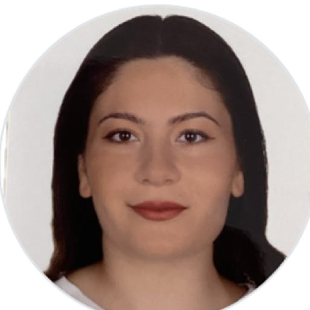

</> Diller
- C#
- Java
- Python
- C++
- TypeScript
- SQL
İstanbul, Türkiye · Yeni fırsatlara açık
Yazılım Mühendisliği mezunuyum. C#/.NET, Java/Spring Boot ve Python/FastAPI ile RESTful servisler yazıyor, bu servisleri Flutter ile mobil uygulamalara bağlıyor ve makine öğrenmesi tarafında veriden çalışan modeller çıkarıyorum. Üçünü birleştiren işleri seviyorum — test otomasyonuyla %80'in üzerinde kod kapsamı ve Docker ile tekrarlanabilir dağıtım da işin parçası.

Beykent Üniversitesi Yazılım Mühendisliği mezunuyum. Üç alanda çalışmayı seviyorum ve bunları birbirinden ayrı görmüyorum: backend tarafında API tasarımı ve iş kurallarının doğru katmanda yaşaması, mobil tarafında bu servislerin kullanıcının eline ulaşması, veri tarafında ise ölçülebilir sonuç üreten modeller. AI Body Scanner tam olarak bu üçünün kesiştiği yerde duruyor: MediaPipe tabanlı analiz API'si, Firebase veri katmanı ve Flutter arayüzü.
SAMPAŞ Holding'deki stajımda C# ve .NET ile test süreçleri yürüttüm, uygulamaları Docker ile konteynerleştirip SSH üzerinden uzak Linux sunucularına dağıttım — bu, dağıtım süresini %30 oranında kısalttı. Çevik sprintlerde haftalık artışlar teslim ettim. Mobil tarafta Flutter ve FlutterFlow ile çalışıyor, veri tarafında Kaggle üzerinde NLP çalışmaları yürütüyorum.
Ortak paydam, yazdığım şeyin kanıtlanabilir olması. Projelerimde birim, entegrasyon, regresyon ve uçtan uca testleri birlikte kurguluyor; Clean Architecture ve CQRS gibi desenleri gerçekten karmaşıklığı azalttıkları yerde kullanıyorum. Makine öğrenmesi tarafında da aynı refleks geçerli: metriğe bakıp basit olanın kazandığını kabul etmeyi öğrendim.
07.2026 — 09.2026 · İstanbul
SAMPAŞ Holding
C# ve .NET ile test süreçleri uyguladım. Uygulamaları Docker ile konteynerleştirip SSH üzerinden uzak Linux sunucularına dağıttım; bu sayede dağıtım süresi %30 oranında azaldı. Çevik sprintlere katıldım, haftalık artışlar teslim ettim ve günlük toplantılarda yer aldım.
04.2025 — 05.2025 · İstanbul
SCA Social
Karar verme süreçleri ve strateji geliştirme üzerine çalıştım. Bilişim hukuku kapsamında kişisel verilerin korunması; yapay zekâ ve veri bilimi adaptasyonu ile denetimli/denetimsiz öğrenme yöntemleri hakkında deneyim kazandım.
09.2022 — 06.2026 · İstanbul
Beykent Üniversitesi
Yazılım geliştirme, veri yapıları, veritabanı sistemleri, mobil programlama ve veri analizi üzerine eğitim aldım. Bitirme çalışmalarım backend servisleri ve makine öğrenmesi uygulamaları üzerine yoğunlaştı.
Lise · Sayısal Bölümü
Matematik, fizik ve bilgisayar bilimleri alanlarında temel eğitim; analitik düşünce ve problem çözme becerilerine odaklandım.
Ürettiğim işlerden bir seçki — mimari kararların ve ölçülen sonuçların öne çıktığı projeler.
Depoların tamamı github.com/sultanuyarr adresinde.
Siber güvenlik tehditleri, analiz teknikleri ve güvenlik protokolleri.
Teknoloji liderliği, inovasyon ve gelişmiş teknoloji üzerine kapsamlı program.
Teknoloji sektöründe fırsat eşitliği, çeşitlilik ve kapsayıcılık.
Android & iOS için cross-platform mobil uygulama geliştirme.
Backend, mobil veya veri tarafındaki pozisyonlar, iş birlikleri ve projelerim hakkında sorularınız için yazabilirsiniz.